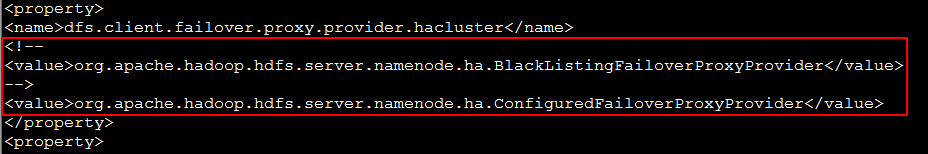

Apache Presto对接FusionInsight¶
适用场景¶
Presto 0.184 ↔ FusionInsight HD V100R002C70SPC100 (HDFS/Hive)
Presto 0.196 ↔ FusionInsight HD V100R002C80SPC100 (HDFS/Hive)
说明¶
Presto是一个开源的分布式SQL查询引擎，适用于交互式分析查询，数据量支持GB到PB字节。
Presto的设计和编写完全是为了解决像Facebook这样规模的商业数据仓库的交互式分析和处理速度的问题
Presto主要与FusionInsight的Hive和HDFS进行对接

配置Hive Connector¶
Presto集群包括coordinator节点和不限数量的worker节点(coordinator节点也可同时为worker节点)，其中只需要在coordinator节点上配置Hive Connector即可。 本文档中配置coordinator节点同时也是worker节点。
-
从该链接下载presto-server的安装包，并上传到presto coordinator的节点
https://repo1.maven.org/maven2/com/facebook/presto/presto-server/0.184/presto-server-0.184.tar.gz
将该压缩包解压缩后得到目录
/opt/presto-server-0.184。 -
在presto节点上安装华为FusionInsight HD V100R002C70SPC100的客户端，默认安装目录
/opt/hadoopclient -
presto该0.184版本要求jdk至少在1.8u60+以上，修改
/etc/profile文件方式配置系统默认的java为FusionInsight HD客户端的jdk，并source环境变量，命令参考如下
在/etc/profile中增加以下行
export JAVA_HOME=/opt/hadoopclient/JDK/jdk
export JREHOME=/opt/hadoopclient/JDK/jdk/jre
export PATH=$JAVA_HOME/bin:$PATH
source 环境变量
source /etc/profile
- 创建Java keystore File for TLS，(后续步骤默认都在presto节点上执行)参考如下命令
source /opt/hadoopclient/bigdata_env keytool –genkeypair –alias testuser –keyalg RSA –keystore /opt/presto.jks
alias后的值必须要跟后面创建的用户名称一致
first and last name必须写成presto节点的主机名

-
通过FusionInsight HD的管理页面创建一个“机机”用户，具体请参见《FusionInsight HD管理员指南》的 创建用户 章节。例如，创建用户testuser，并选择hadoop和hive用户组，下载对应的秘钥文件user.keytab以及krb5.conf文件，并上传到presto节点的
/opt/hadoopclient目录下，将user.keytab改名为testuser.keytab。 -
参考如下命令在Huawei FusionInsight HD的Kerberos中创建一个新的principal，其名称为“testuser/presto-server”，其中presto-server为presto的coordinator节点的主机名，导出该principal的秘钥文件为
/opt/presto.keytab。

执行kadmin –p kadmin/admin命令时初始密码Admin@123，修改后需严格牢记新密码。

- 创建目录/opt/presto-server-0.184/etc，在该目录下创建如下文件
config.properties参考如下
coordinator=true
node-scheduler.include-coordinator=true
http-server.http.port=8080
query.max-memory=50GB
query.max-memory-per-node=1GB
discovery-server.enabled=true
discovery.uri=http://presto-server:8080
http-server.authentication.type=KERBEROS
http.server.authentication.krb5.service-name=testuser
http.server.authentication.krb5.keytab=/opt/presto.keytab
http.authentication.krb5.config=/opt/hadoopclient/KrbClient/kerberos/var/krb5kdc/krb5.conf
http-server.https.enabled=true
http-server.https.port=7778
http-server.https.keystore.path=/opt/presto.jks
http-server.https.keystore.key=Huawei@123
jvm.config参考如下内容
-server
-Xmx16G
-XX:+UseG1GC
-XX:G1HeapRegionSize=32M
-XX:+UseGCOverheadLimit
-XX:+ExplicitGCInvokesConcurrent
-XX:+HeapDumpOnOutOfMemoryError
-XX:OnOutOfMemoryError=kill -9 %p
-Djava.security.krb5.conf=/opt/hadoopclient/KrbClient/kerberos/var/krb5kdc/krb5.conf
node.properties参考如下内容
node.environment=production
node.id=ffffffff-ffff-ffff-ffff-ffffffffffff
node.data-dir=/var/presto/data
log.properties参考如下内容
com.facebook.presto=INFO
- 创建目录/opt/presto-server-0.184/etc/catalog，在该目录下创建hive.properties文件
connector.name=hive-hadoop2 hive.metastore.uri=thrift://162.1.93.101:21088,thrift://162.1.93.102:21088 hive.metastore.service.principal=hive/hadoop.hadoop.com@HADOOP.COM hive.metastore.authentication.type=KERBEROS hive.metastore.client.principal=testuser/presto-server hive.metastore.client.keytab=/opt/presto.keytab hive.hdfs.authentication.type=KERBEROS hive.hdfs.impersonation.enabled=false hive.hdfs.presto.principal=testuser hive.hdfs.presto.keytab=/opt/hadoopclient/testuser.keytab hive.config.resources=/opt/presto-server-0.184/etc/catalog/core-site.xml,/opt/presto-server-0.184/etc/catalog/hdfs-site.xml
其中hive.metastore.uri的值从/opt/hadoopclient/Hive/config/hive-site.xml中查找
- 将FusionInsight HD客户端中的core-site.xml和hdfs-site.xml复制到
/opt/presto-server-0.184/etc/catalog中
cp /opt/hadoopclient/HDFS/hadoop/etc/hadoop/core-site.xml /opt/presto-server-0.184/etc/catalog/
cp /opt/hadoopclient/HDFS/hadoop/etc/hadoop/hdfs-site.xml /opt/presto-server-0.184/etc/catalog/
- 按照下图修改hdfs-site.xml文件中的dfs.client.failover.proxy.provider.hacluster属性为org.apache.hadoop.hdfs.server.namenode.ha.ConfiguredFailoverProxyProvider
vi /opt/presto-server-0.184/etc/catalog/hdfs-site.xml

- 修改/etc/hosts文件，将本机的IP与主机名解析以及Huawei FusionInsight HD集群节点的IP与主机名解析添加进去，例如

- 安装maven：
wget http://apache.osuosl.org/maven/maven-3/3.3.9/binaries/apache-maven-3.3.9-bin.tar.gz tar -xzvf apache-maven-3.3.9-bin.tar.gz -C /opt/
修改profile文件vi /etc/profile,增加以下配置
export PATH=$PATH:/opt/apache-maven-3.3.9/bin
导入环境变量
source /etc/profile
执行mvn -v可以正确输出mvn版本
-
安装git
yum install -y git -
参考如下命令，下载presto-server-0.184的源码
git clone https://github.com/prestodb/presto.git git checkout 0.184 -
修改presto-hive/src/main/java/com/facebook/presto/hive/authentication/KerberosHiveMetastoreAuthentication.java的代码，将代码中"Sasl.QOP=auth"修改为"Sasl.QOP=auth-conf"

-
重新编译presto
cd presto-hive mvn clean install -DskipTests -
将编译后target目录下的presto-hive-0.184.jar文件替换/opt/presto-server-0.184/plugin/hive-hadoop2/presto-hive-0.184.jar文件
-
启动presto server，跟踪/var/presto/data/var/log/server.log查看启动日志
sh /opt/presto-server-0.184/bin/launcher stop sh /opt/presto-server-0.184/bin/launcher start tailf /var/presto/data/var/log/server.log
通过Presto CLI连接Hive¶
使用Presto CLI连接Huawei FusionInsight HD的Hive，使用presto自带的命令行工具执行SQL语句。
- 通过如下链接下载presto cli启动的jar包
https://repo1.maven.org/maven2/com/facebook/presto/presto-cli/0.184/presto-cli-0.184-executable.jar
-
并将该jar包上传到可与presto节点网络互通的节点上(也可将presto coordinator节点作为cli使用节点)。
-
配置cli节点的jdk为1.8u60+以上版本
-
配置cli节点的/etc/hosts文件，将FI集群和presto coordinator节点的IP与主机名关系配置到cli节点
-
从presto节点拷贝presto.jks、presto.keytab、krb5.conf以及连接HDFS所需的core-site.xml和hdfs-site.xml文件到cli节点
-
将presto-cli-0.184-executable.jar包改为可执行文件
mv presto-cli-0.184-executable.jar presto chmod u+x presto ./presto -h -
创建presto cli启动脚本，类似如下，注意将相关文件的路径按实际位置替换
./presto \ --server https://presto-server:7778 \ --enable-authentication \ --krb5-config-path /opt/hadoopclient/krb5.conf \ --krb5-principal testuser/presto-server \ --krb5-keytab-path /opt/presto.keytab \ --krb5-remote-service-name testuser \ --keystore-path /opt/presto.jks \ --keystore-password Huawei@123 \ --catalog hive \ --schema default \
catalog后面的hive是和presto coordinator节点配置的hive.properties的文件名匹配的，如果hive.properties改名为hivetest.properties，则这里改为hivetest
- 通过cli执行SQL语句，其他SQL语法请参考https://prestodb.io/docs/0.184/sql.html

查询表workers_info中数据：

百万记录数表web_sales查询：

通过Presto JDBC连接Hive¶
使用Presto JDBC接口连接Huawei FusionInsight HD Hive
- 从如下链接下载jdbc的驱动包
https://repo1.maven.org/maven2/com/facebook/presto/presto-jdbc/0.184/presto-jdbc-0.184.jar
-
参考https://prestodb.io/docs/0.184/installation/jdbc.html设置JDBC URL，用户名为任意字符，密码为空，在eclipse中调通的示例如下:
import java.sql.Connection; import java.sql.DriverManager; import java.sql.ResultSet; import java.sql.SQLException; import java.sql.Statement; public class PrestoTest { public static void main(String[] args) throws SQLException, ClassNotFoundException { Class.forName("com.facebook.presto.jdbc.PrestoDriver"); Connection connection =DriverManager.getConnection ("jdbc:presto://162.1.115.71:8080/hive/default","root",null); Statement stmt =connection.createStatement(); ResultSet rs = stmt.executeQuery("select * from workers_info limit 10"); int col = rs.getMetaData().getColumnCount(); while(rs.next()) { for (int i = 1; i <= col; i++) { System.out.print(rs.getString(i) + "\t"); if ((i == 2) && (rs.getString(i).length() < 8)) { System.out.print("\t"); } } System.out.println(""); } rs.close(); connection.close(); } } -
测试结果：

- 百万记录数表web_sales查询：